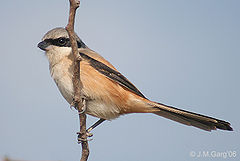
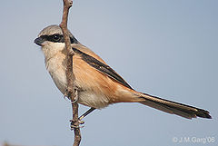

| Long-tailed Shrike | |
|---|---|
|  | |
| erythronotus race at Hodal in Faridabad District of Haryana, India. | |
| Conservation status | |
| Binomial name | |
| Lanius schach Linnaeus, 1758 |
| Long-tailed Shrike | |
|---|---|
|  | |
| erythronotus race at Hodal in Faridabad District of Haryana, India. | |
| Conservation status | |
| Binomial name | |
| Lanius schach Linnaeus, 1758 |
The Long-tailed Shrike or the Rufous-backed Shrike (Lanius schach) is a member of the bird family Laniidae, the shrikes. The eastern or Himalayan race, L. s. tricolor, is sometimes called the Black-headed Shrike.
It is a common resident breeder throughout the Indomalayan ecozone from Kazakhstan, through Afghanistan, Pakistan, Indian peninsula except eastern states[2], to New Guinea, found on bushes in scrubby areas and cultivation. Winter visitor to southern areas such as southeast India and Sri Lanka.
It has some resemblances to the grey shrikes, such as the Southern Grey Shrike, Lanius meridionalis, sharing the pearl grey head and mantle and black mask extending from the forehead, through the eye, to the ear coverts. An eastern race found in Bhutan to Arunachal Pradesh, sometimes called the Himalayan L. s. tricolor, has a black head extending from the eye mask to the whole crown and nape[2].
It is small for a grey shrike, but has a very long tail with rufous edges. The underparts are white, but with rufous flanks. The bill and legs are nearly black.
This bird has a characteristic upright "shrike" attitude perched on a bush, from which it sallies after lizards, large insects, small birds and rodents.
Prey may be impaled upon a sharp point, such as a thorn. Thus secured they can be ripped with the strong hooked bill, but its feet are not suited for tearing.
Its flight is undulating, but its dash is straight and determined.
This species is a very rare vagrant to western Europe on the strength of a single accepted British record on South Uist in November 2000. It has also occurred as a vagrant to Japan, Oman, Israel, Hungary, Sweden and Turkey.

_I2-Haryana_IMG_8894.jpg){kind=link}
_I_IMG_7948.jpg){kind=link}